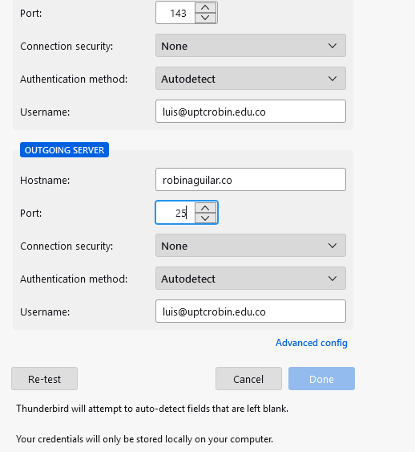

Instalación y configuracion de SMTP
Instalamos la característica de SMTP.
Vamos a la sección de agregar roles y características. En el apartado de características del servidor buscamos "servidor SMTP", lo seleccionamos e instalamos.
Escribimos un nombre para el servidor SMTP.
En este apartado simplemente le damos un nombre al servidor.
Configuramos el servidor.
Para esto, nos dirigimos al administrador ISS, abrimos el asistente para un nuevo servidor SMTP y seleccionamos nuestra IP, en nuestro caso es 192.168.1.1, y le damos clic en siguiente.
Configuramos un dominio de email.
En este caso, decidí darle el dominio uptcrobin.edu.co, para que los emails sean "test@uptcrobin.edu.co".
Verificamos tener instalados el .NET
Para que funcione correctamente nuestro SMTP, debemos de tener instalados el .NET, en su preferencia el 3.5 y 4.5. El procedimiento es el mismo: vamos a roles y características, seleccionamos .net y damos siguiente, siguiente hasta instalar.
Thunderbird y HmailServer
Para el envío de correos podemos usar un cliente Telnet y probar el envío de correos por consola, aunque existe otra opción, la cual es usar las herramientas Thunderbird y HmailServer para realizar la interacción de email más amigable y funcional.
Configuramos HmailServer
Inicialmente, no pedirá que nos conectemos a un HOST y nos pedirá una contraseña. Una vez tengamos esto, podemos ir a configurar el dominio y usuarios del servidor de mails.
Configuramos HmailServer - parte 2
Debemos crear un dominio. Para nuestro caso, elegí uptcrobin.edu.co, con esto garantizamos que nuestros correos tengan esta extensión 'XXXXX@uptcrobin.edu.co'.
Configuramos HmailServer - parte 3.
Debemos crear nuestros usuarios, en este caso he creado 2 correos que se pueden evidenciar en la siguiente imagen.
Validar que ambas máquinas estén en la misma red.
Haciendo uso del CMD o la PowerShell, ingresamos el comando ipconfig y validamos que ambas direcciones coincidan al menos hasta el 3 octeto.
Configuramos Thunderbird.
Una vez tengamos descargado el software Thunderbird, este permitirá el envío de mensajes entre correos, para lograr esto, debemos configurar nuestro correo de la siguiente manera, tener en cuenta que ambas máquinas deben estar en la misma red o conectadas a nuestro servidor, además se debe tener claro cuál es el nombre de nuestro dominio, es este caso robinaguilar.co.
Probar.
Una vez están configuradas en la misma red y se halla configurado el Thunderbird de manera correcta, podemos enviarnos correos entre dos usuarios, como se evidencia a continuación: